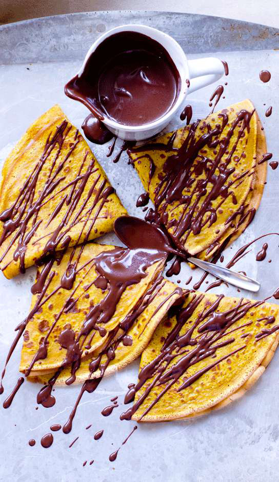

Chocolate Crepes
Ingredients
- 50 g oats
- 10 g Vanilla Protein Powder
- 80 ml Unsweetened Almond Milk (or milk of choice)
- 80 ml Water
- 1.0 egg
- Topping: 100g YoPro Vanilla
- Protein Yoghurt
- 10 g Chocolate Protein Powder
- 2.5 ml Cinnamon
Instructions
- Blend 50g of oats in blender (this is now oat flour)
- Once blended add 10g of vanilla protein powder, 80ml of unsweetened almond milk, 80ml of water, 1 egg & blend again for 1 minute.
- Now it's time to cook the crepes! Using a non stick pan with the stove on medium heat pour the crepe mixture in slowly & fill the pan all the way to the edges, make sure the crepe mixture layer is thin & not too thick like pancakes. (3 crepes in total)
- Cook for 3 - 5 minutes on each side, as these are crepes they will cook much faster compared to pancakes since they are thinner.
- In a small bowl mix together 100g of vanilla protein Yogurt & 10g of chocolate protein powder, mix well with a fork to create a protein filling sauce.
- Fold each crepe in half & spread 35g of the chocolate protein filling sauce across each crepe.
- Fold over each crepe again so that the protein chocolate filling sauce is in the middle.
- For the toppings sprinkle 1/2 tsp of cinnamon & 1 Tbsp of no added sugar chocolate sauce across all 3 crepes & enjoy! (toppings are optional & customizable to your liking)
Source PDF page 55